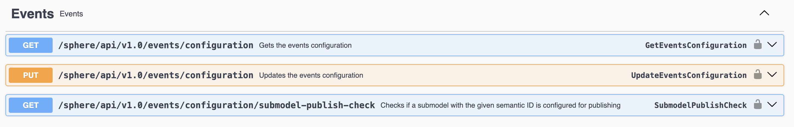

Events
⚠️ Experimental This is an experimental feature and usage in productive systems is not advised!
Note Submodel element operations do not produce any events!
Besides the HTTP/REST based API endpoint, twinsphere also offers a MQTT based API for receiving events about shells and submodels.
Configuration
All shell changes are published.
Submodel events are published only for configured semantic IDs. This configuration can be modified in the "Events"
section of the /sphere/swagger/index.html.

The default configuration will look something like this:
{
"publish": {
"submodels": {
"semanticIds": [
"https://admin-shell.io/zvei/nameplate/1/0/ContactInformations",
"0173-1#01-AHF578#001",
"0173-1#01-AHF578#003",
"https://admin-shell.io/zvei/nameplate/2/0/Nameplate",
"https://admin-shell.io/idta/nameplate/3/0/Nameplate",
"https://admin-shell.io/ZVEI/TechnicalData/Submodel/1/2",
"0173-1#01-AHX837#002"
]
}
}
}
Per default, only the common submodels (nameplate / handover docs / tech data) are included.
Regex
To use regular expressions instead of exact matches, prefix your semantic ID with "$regex=" and provide a valid regex expression. If you need to use special characters in your pattern (such as $ / . @ >) you'll need to escape them with double backslashes (\\).
For example, to match all submodels whose Semantic ID includes "test":
{
"publish": {
"submodels": {
"semanticIds": [
"$regex=^test$"
]
}
}
}
Multiple regex expressions, as well as matching with static strings, is possible.
Connecting to the broker
Connection is based on mutual-TLS authentication with certificates. At present, we only support the thumbprint matching strategy.
Certificate creation
- Create your own certificate (it can be self-signed or issued by a valid certificate authority, but ensure you store this certificate securely as a SECRET). You can simply follow this guide ⧉ or use a tool of your choice.
- Send us the thumbprint via a JIRA ticket request. We will provide you with the connection details once the thumbprint has been granted access. The thumbprint itself is not a secret, so it can be sent through unsecured channels.
To test out the connection, we recommend using mqttx.app ⧉
Connecting
Any MQTT 3.1 or 5.0 client library in any language is supported. Make sure you understand and distinguish between the
MQTT client ID (aka Session ID) and the username which you need to provide, like in WithCredentials() method
in the C# example below.
Your client ID (session ID) can have any value, but make sure it is fixed and not dynamic. This value will be used to map the MQTT session back to your client in cases such as restarts and failures.
Here is a generic C# example with MQTTNet on how to establish a connection:
const string clientId = "your-fixed-client-id-per-consumer"; // aka Session ID
const string username = "you will get this value from us";
var mqttClientConfiguration = new MqttClientOptionsBuilder()
.WithClientId(clientId)
.WithTcpServer(_eventBrokerHost, _eventBrokerPort)
...
.WithCredentials(username, "")
Single connections
Most common case will be that you subscribe to events in a single-instance with a fixed clientId (any value as long as it is fixed between deployments and restarts). In case of rolling deployments, you don't necessarily need to disconnect the "old" client first. The old client will automatically get a disconnect once the new client connect with the same username / clientId combination.
Multiple connections
For cases where you want to have multiple concurrent connections, we support up to 3 concurrent sessions per "username".
You can refer to Microsoft docs ⧉ on some session ID / client ID naming patterns in case of multiple concurrent connections.
Topics, message contracts and QoS
Following MQTT topics are supported:
twinsphere/shells/<shell id - base64 encoded!>/createdtwinsphere/shells/<shell id - base64 encoded!>/updatedtwinsphere/shells/<shell id - base64 encoded!>/deletedtwinsphere/submodels/<submodel id - base64 encoded!>/createdtwinsphere/submodels/<submodel id - base64 encoded!>/updatedtwinsphere/submodels/<submodel id - base64 encoded!>/deleted
MQTT wildcards for subscriptions are supported at the "id" level, for example, to subscribe to all shell update events,
use: twinsphere/shells/+/updated
Messages are delivered with a QoS of 1 (at-least-once), which means that duplicates are possible and should be expected.
The MQTT message content (referred to here as the twinsphere envelope) follows the schema below:
# shell event envelope
version: string
timestamp: string (UTC in ISO 8601 format)
payload: JSON string (aas-core-works AssetAdministationShell meta model)
# submodel event envelope
version: string
timestamp: string (UTC in ISO 8601 format)
payload: JSON string (aas-core-works Submodel meta model)
affectedShellIds: JSON array of strings containing shells this submodel referenced at the time
The envelope is always compressed via gzip, so you should first decompress it. Then, to deserialize the JSON string in the payload property, you can use the aas-core-works libraries for your target programming language or platform.
Below is a code snippet demonstrating how you could achieve this in C#:
// If you are using MQTTnet, then your MQTT message (MqttApplicationMessage) should have a
// property called PayloadSegment. Using the extension method Decompress, defined below,
// you can do something like this:
var envelopeJson = msg.PayloadSegment.ToArray().Decompress();
var envelope = JsonSerializer.Deserialize<ShellEvent>(envelopeJson);
// now you can read envelope.Payload, which is a JSON structure that can be deserialized via
// core-works Jsonization helper from the https://github.com/aas-core-works/aas-core3.0-csharp
// you need a "container" to deserialize into - this is our envelope
public class ShellEvent
{
[JsonPropertyName("version")]
public required string Version { get; init; }
[JsonPropertyName("timestamp")]
public required string Timestamp { get; init; }
[JsonPropertyName("payload")]
public required string Payload { get; init; }
}
public static string Decompress(this byte[] compressedContent)
{
using var compressedStream = new MemoryStream(compressedContent);
using var gzipStream = new GZipStream(compressedStream, CompressionMode.Decompress);
using var decompressedStream = new MemoryStream();
gzipStream.CopyTo(decompressedStream);
var decompressedBytes = decompressedStream.ToArray();
return Encoding.UTF8.GetString(decompressedBytes);
}
To properly handle possible duplicate events on your side, make sure to use the timestamp property and ignore messages newer than the timestamp you already processed.
MQTT protocol details
For information on supported MQTT versions and limitations on MQTT features, please refer to this resource. Equally important are the quotas & limitations.
Especially important is to mention the limitations of the persistent sessions which is up to 100 messages / 8h per topic.
Additional information
There are several important aspects to note regarding the twinsphere interface:
- Events published are not issued immediately after a change is made via the REST API, there can be a delay of up to several minutes.
- Duplicate events should be expected, and are commonplace when using QoS 1.
Troubleshooting
If you encounter any issues, we recommend enabling tracing of MQTT messages depending on the library you are using. For example, on the .NET Platform using MQTTNet, you can enable traces like this.
In some cases however, when it comes to features like authorization and topic permissions, you might experience disconnects from the broker without detailed explanation. Ensure that you subscribe to the correct topic names and double check for typos or similar issues. In the worst case scenario, don't hesitate to submit a ticket issue with us for further assistance in debugging the problem.